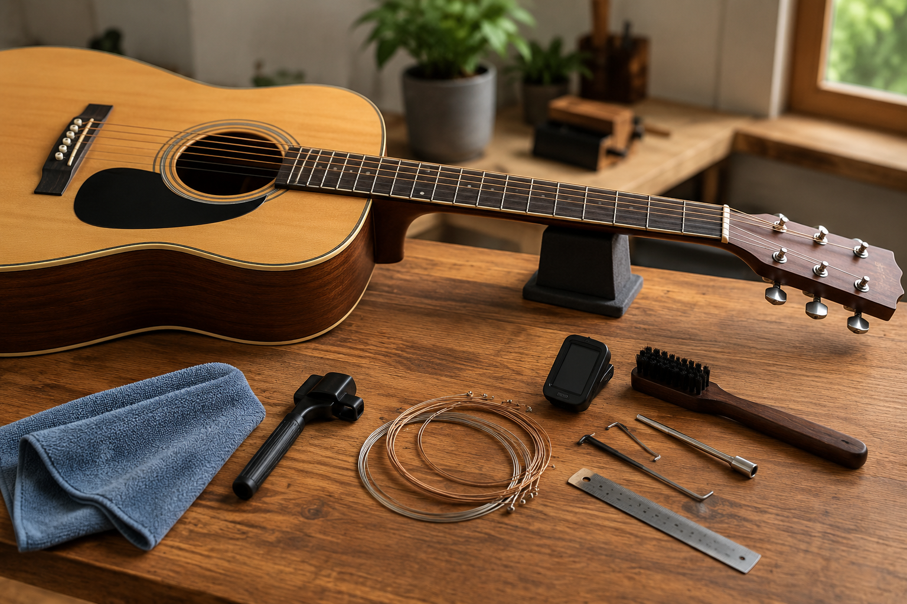

ABOUT
Acoustic Guitar Setup and Maintenance

My name is Suman, and I have been playing the guitar for over three years. The initial hobby grew into an interest in how an acoustic guitar works, sounds, and feels when well-maintained. Eventually, I realized that guitar ownership is only half the equation when it comes to owning a guitar. It is important to care for the instrument as well.
I have experience in changing strings, cleaning fretboard and frets, adjusting the relief on the neck, adjusting the truss rod, and working with string action. These techniques have been useful in making myself feel more at ease with playing the guitar and making minor adjustments to playability. I am still learning, but maintaining the guitar is interesting to me as well.
I have built this website to help those interested in the rudimentary knowledge of acoustic guitar setup and maintenance better understand how to do so, particularly for beginners who may not know where to begin. Many new players feel it is always necessary to take a trip to the guitar tech. There are certain jobs that need professionals, yet guitarists can manage many other maintenance issues on their own.
The subjects I touch on here, like changing strings, cleaning the guitar and fretboard, checking the neck relief, measuring string action, keeping a proper level of humidity, and selecting a useful range of maintenance tools. I aim to cover each topic in as simple and practical a manner as possible, with little technical jargon and not overwhelm the beginner.
Keeping a guitar well-maintained makes it easier to play, preserves its playability, and extends its enjoyment over many years. I hope this site will enable other guitarists to understand guitar better and to feel confident about their instrument.
Works Cited
OpenAI. Acoustic Guitar Setup and Maintenance Workspace. AI-generated image, 28 Aug. 2026. ChatGPT.